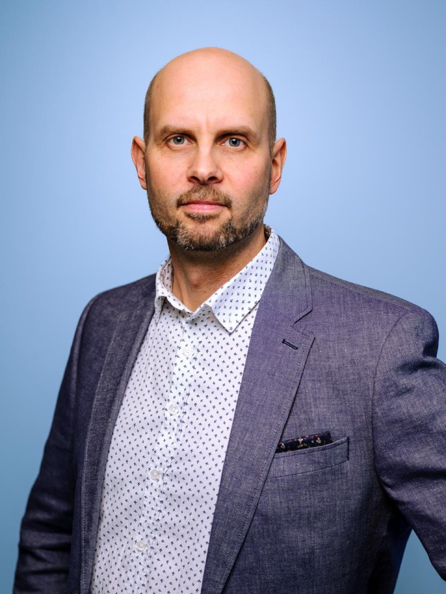

Valtteri Tuokkola – KAN ry:n toiminnanjohtaja
Valtteri Tuokkola on kehittämiseen ja ihmisten johtamiseen keskittyvä uudistaja, jonka työn ytimessä on kristillinen lähimmäisenrakkaus ja vankka usko jokaisen yksilön ainutkertaiseen arvoon. Toiminnanjohtajana hän haluaa ohjata KAN ry:tä kohti strategista uudistumista ja vaikuttavaa yhteistyötä, tavoitteenaan tavoittaa avun piiriin myös uusi sukupolvi.
Valtterilla on laaja kansainvälinen elämänkokemus, sillä hän on asunut yli puolet elämästään ulkomailla, muun muassa Kanadassa ja kahdeksan vuotta Albaniassa. Hän verkostoituu ja rakentaa siltoja laajasti eri ihmisten ja tahojen kanssa heidän erilaisista lähtökohdistaan riippumatta. Työotteeltaan Valtteri on käytännönläheinen ja ratkaisukeskeinen, ja hän keskittyy toimiviin ratkaisuihin sekä selkeisiin tavoitteisiin.
Tällä hetkellä Tampereella asuvan Valtterin arki täyttyy perheen yhteisestä ajasta ja aktiivisesta elämästä kolmen lapsen kanssa. Tasapainoa johtamistyölle ja tilaa reflektoinnille hän hakee musiikista, juoksemisesta, perheestä sekä luonnon rauhasta.
Valtterin suurin vahvuus ja ilo on löytää ihmisissä piileviä kykyjä sekä tukea heitä löytämään oma potentiaalinsa ja maksimoimaan henkilökohtainen kasvunsa.
"Yhdessä rakennamme turvallista yhteisöä, jossa jokaisella on mahdollisuus uuteen alkuun."